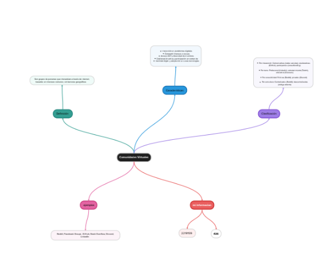
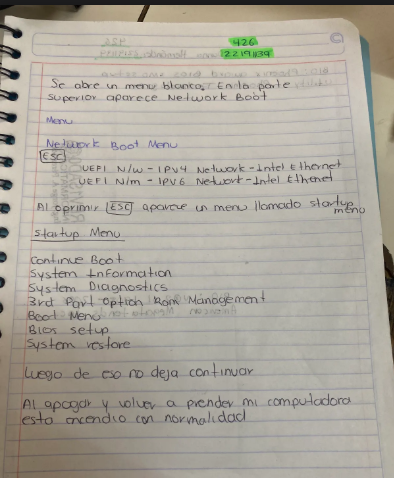
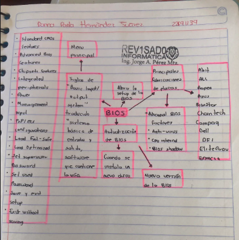
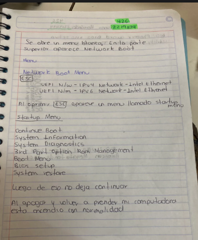
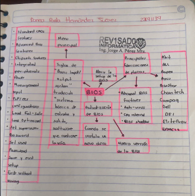

Comunidades Virtuales :
Se basan en tecnologías como lenguajes de programación gestores de contenido y bases de datos para su funcionamiento además dependen de redes y protocolos como TCP IP y servicios en la nube para la conexión entre usuarios. La seguridad es clave con medidas como cifrado autenticación y protección contra ciberataques también se usa inteligencia artificial para moderación automatizada sistemas de recomendación y chatbots. El análisis de datos con Big Data permite personalizar la experiencia del usuario y mejorar la seguridad en general la informática es la base que impulsa la evolución y expansión de las comunidades virtuales.Trabajos:



 


